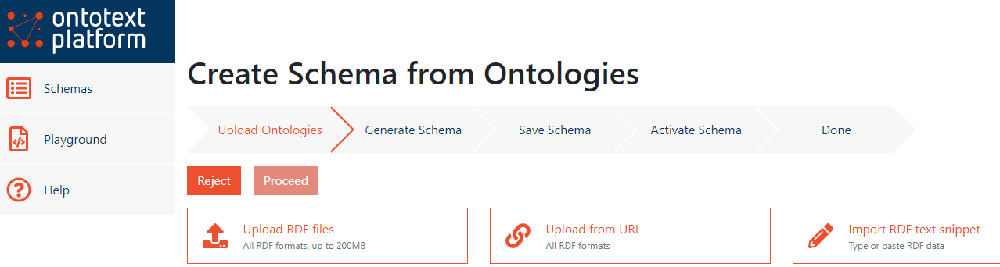
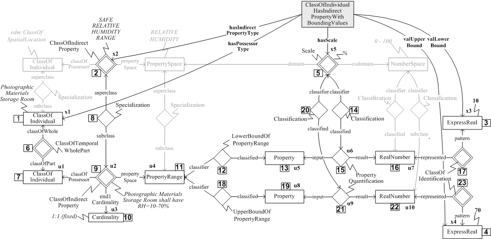

Exploring Industry 4.0 Standards with the Ontotext Platform
Semantics 2020 vendor videos
2020-09-08
Intro
- Hi, my name is Vladimir Alexiev and I’m Ontotext’s Chief Data Architect.
- Miroslav Chervenski who is the Ontotext Platform Product Manager also contributed to this presentation.
In our work with Industry data, we have researched a number of industrial data standards. This presentation is an intro to the Industry 4.0 Knowledge Graph by Fraunhofer IAIS and how we used the Ontotext Platform for simplified access and exploration of this KG.
Key resources (more links further in the slides):
- My publications: https://vladimiralexiev.github.io/my/index.html
- This presentation: https://vladimiralexiev.github.io/my/pres/20200908-i40kg-semantics/Slides.html
- Industry 4.0 KG main visualization: http://i40.semantic-interoperability.org/ (29-Mar-2024: site is down)
- Ontotext Platform Semantic Objects: https://platform.ontotext.com/semantic-objects/
- Try GraphQL queries: https://i40kg.ontotext.com/workbench/graphql
- Try SPARQL queries: https://i40kg.ontotext.com/graphdb/sparql
Industry Standards
- Numerous “traditional” standards for design, manufacturing, automation, control, quality etc
- New and upcoming standards for Industry 4.0, digital twins, Industrial IoT, asset management, etc
- The standards landscape is large and puzzling, how can one understand it?
Standard classification frameworks:
- Current Standards Landscape for Smart Manufacturing Systems, NISTIR 8107, NIST, 2016-02
- The Industrial Internet of Things. Volume G1: Reference Architecture. IIRA v1.9, Industrial Internet Consortium, 2019-06
- Reference Architectural Model Industrie 4.0 (RAMI 4.0), German Electrical and Electronic Manufacturers’ Association (ZVEI)
- Asset Administration shell, German Electrical and Electronic Manufacturers’ Association (ZVEI)
Notes on Standards
Standards have always been very important in the industrial society.
- In addition to old established standards, there are now new upcoming standards for the digitization of industry (Industry 4.0).
- Various classification frameworks have been adopted. Some of the important ones include NIST, IIRA, RAMI and Asset Shell.
- Asset Shell is also a methodology/idea about integrating various standards in one “shell” using semantic technologies.
Industry 4.0 Knowledge Graph (I40KG)
(formerly Standards Ontology), Fraunhofer IAIS
- Describes semantically 320 standards, their classification, area of use, purpose, relations, etc
- Documentation: https://i40-tools.github.io/I40KG/docs
- Main visualization: http://i40.semantic-interoperability.org/
- Extra visualizations: https://i40-tools.github.io/StandardOntologyVisualization/
- The Industry 4.0 Standards Landscape from a Semantic Integration Perspective, Emerging Technologies and Factory Automation (ETFA), 2017-09
- Classifies standards according to various methodologies and levels: Admin Shell Sub Model, Alliance of Industrial Internet Architecture Classification, Fiware Chapter, IDS RAM Layer, IIRA Functional Domain, ISA 95 Level, IVI Layer, IoT-A Perspective, NGSI Context Information Management API, Product Development Life Cycle, Production System Life Cycle, RAMI Hierarchy Level, etc
I40KG Main Visualization

I40KG Visualization Notes
The main view of I40KG shows the integrative role of RAMI 4.0 and Admin Shell, their various areas, and how they build upon existing areas in those areas.
- For example for Communication Layer, they use OPC UA (for M2M communication) and IEC 61784 (for industrial networks).
- Click on the title for a full version of the image!
I40KG Standards Classification
Standards Classification visualization: “progressive zoom”

I40KG Standards Progressive Classification
A great feature of I40KG is its elaborative (progressive) classification. (Follow the direction of the red arrows).
- On the top level are about 10 framework architectures or classification initiatives.
- On the middle level, eg the NIST initiative covers Modeling, Production model data, Production lifecycle management, etc.
- On the lowest level, eg Modeling includes standards like ASME Y14.41, IEC 81714, etc
I40KG Concerns
- “Concerns” are various areas or topics relevant to industry digitization (eg AI, access rights, adaptability, etc).
- Addresses about 160 Concerns
AI AccessPolicy Access_Rights_for_IoT-Cloud Accountability Actuation Adaptability Agility Anonymity AssetManagement Authentication Authorization Auto_Scaling AutonomousCommunication AutonomousConfiguration Availability Awareness Bandwidth BigDataApplications BusinessContext BusinessProcessManagement BusinessTransactions BusinessValue CardinalityOfDataSources CardinalityOfParticipants Certification CloudComputing Communication ComplexEventProcessing Compliance Confidentiality Connectivity ConstrainedDevices ContextAwareness CostEfficiency CrossDomainIdentityManagement Customization DataAccess DataAccessControl DataAggregation DataAnalytics
…
ServiceChoreography ServiceComposition ServiceDeployment ServiceDescription ServiceDiscovery ServiceIsolation ServiceLevelAgreements ServiceLifecycleManagement ServiceOrchestration ServiceSelection Service_Recovery Software_Updates SpatialModeling StreamProcessing SyntacticInteroperability SystemEvolution SystemRecovery ThingDescription ThingMobility ThingRepresentation TimeSynchronization Trustworthiness Unicast UnreliableNetwork UserInteraction UserPreferences VendorLockin VirtualEntity
I40KG Model (Described)
- So, how do we use this wealth of semantic data?
- We need to understand its model: what ontologies it uses and how they are put together.
- The paper The Industry 4.0 Standards Landscape from a Semantic Integration Perspective at ETFA 2017 provides a good description, and the basic data looks like this.
I40KG Model Image (Described)

I40KG Model (Actual)
In reality, the data is a lot more complex.
- If you analyze all relations between classes, there are 300
domain-property-range - Here we depict relations with >=5 instances; there are 78 total relations
- Note: attributes are not even depicted.
- Click on the title for a large version of the diagram.
I40KG Model Image (Actual)

Exploring With the Ontotext Platform
The Ontotext Platform gives us an easier way to explore: GraphQL.
- We need to make a Semantic Object model schema (SOML).
- Made various fixes to ontology (eg duplicated prop definitions, redundant props) and data (eg
dbr:_Arizonashouldn’t have leading underscore) - First generate a draft schema from the ontology using a tool called owl2soml, which is embedded in the Workbench in the form of a wizard
- Generated Semantic Object (SOML) Model from the ontology with owl2soml (see github): Schema>Create wizard

SOML Schema
Made a number of additions and fixes, eg
- lang: en,ALL to return only one exemplar of multi-valued labels (preferring English),
- removing almost all prefixes from GraphQL names for easier consumption (eg associatedWith instead of dul:associatedWith),
- adding virtual inverses with inverseAlias for bidirectional graph navigation,
- binding all useful props to classes (several are in an abstract root class Entity),
- removing max: inf cardinality from several props since it’s more expensive to query,
SOML Schema Activated

GraphQL Query 1: Standards and Classifications
- The Platform uses the SOML definition to generate GraphQL schema, query and mutation framework, transpile to SPARQL, format results as JSON, generate SHACL for validation, etc.
- GraphQL queries practically write themselves! (Due to schema introspection)
Eg “give me standards that have both International Classification of Standards (hasICS) and some classifications that have both isDescribedin and associatedWith relations”
GraphQL Query 1 Notes
To understand this query, you need to look at the diagram of the data, and know two things:
- empty brackets in
wheremean exists, {value}is needed to get to the string value of alangString. (STO has tagged all strings as@en, I guess in hopes to one day expand to the whole world!).
If you play with GraphiQL, you may agree that queries nearly “write themselves”. You need a fairly precise schema though:
- Eg here I’ve put too many props in Entity (eg abbreviation, label, license) while in actuality some appear at more specific classes.
- So these props are offered for most entities, which “pollutes” the editor suggestions a bit.
GraphQL Result 1: Standards and Classifications
(Brackets compressed and empty arrays skipped for brevity)
"standard": [{
"label": {"value": "IEC 60839-5-2:2016"},
"hasPublisher": [{"orgName": {"value": "International Electrotechnical Commission"}}],
"hasICS": [{"title": {"value": "Alarm and warning systems"}}],
"hasClassification": [
{"id": "https://w3id.org/i40/sto#RamiControlDevice",},
{"id": "https://w3id.org/i40/sto#RamiFieldDevice",},
{"id": "https://w3id.org/i40/sto#RamiCommunicationlayer",},
{"id": "https://w3id.org/i40/sto#AsSecurity",
"isDescribedin": [{"id": "https://w3id.org/i40/sto#AdministrationShell"}],
"associatedWith": [
{"id": "https://w3id.org/i40/sto#BdvaCyberSecurityTrust"},
{"id": "https://w3id.org/i40/sto#DtpSecurityPrivacy"},
{"id": "https://w3id.org/i40/sto#FiwareSecurity"}]}]}“IEC 60839-5-2 by the IEC is about Alarm and warning systems and is classified in the areas RamiControlDevice, RamiFieldDevice, RamiCommunicationlayer; and AsSecurity (described in AdministrationShell, associated with BdvaCyberSecurityTrust, DtpSecurityPrivacy, FiwareSecurity)
GraphQL Result 1 Notes
- You may notice that the result shape (nesting) exactly matches the query shape.
- (I’ve compressed the result to fit it on the page, but if you look in GraphiQL, you’ll see that’s true).
- IEC 60832 is about alarm systems, so all its classifications (security) appear to be correct.
GraphQL Query 2: Standards and Licenses
Let’s find entities (eg standards) and their licenses:
We get results, plus an error:
GraphQL Query 2 Notes
Turns out that IEC_62541 is dual-licensed under GPLv2 and OpenLicenseDocument. So our assumption that entities have a single license (removing max:inf) is not 100% true.
Here we’re looking for entities and their licenses.
- I assumed entities have just one license so removed
max: inf(more expensive to query), but it turns out the assumption is not 100% right (only 95% or so). - GraphQL returns a very precise error, which allows us to find the exact query spot, and the exact data record that caused the error.
GraphQL Query 3: ISO 15926
ISO 15926, in development for nearly 30 years, has been touted as the “lingua franca” for global interoperability.
Let’s find the classifications and standards that it is related to:
GraphQL Query 3 Response
"standard": [{
"comment": {"value": "Industrial automation systems and integration -- Integration of life-cycle data for process plants including oil and gas production facilities."},
"hasClassification": [
{"id": "https://w3id.org/i40/sto#RamiProduct"},
{"id": "https://w3id.org/i40/sto#RamiIntegrationLayer"},
{"id": "https://w3id.org/i40/sto#AsConfiguration"},
{"id": "https://w3id.org/i40/sto#AsEngineering"},
{"id": "https://w3id.org/i40/sto#ProductLifeCycleManagement"}
],
"relatedTo": [
{"id": "https://w3id.org/i40/sto#DIN_SPEC_16592",
"label": {"value": "DIN SPEC 16592"},
"comment": {"value": "Combining OPC Unified Architecture and Automation Markup Language."}},
{"id": "https://w3id.org/i40/sto#IEC_62541",
"label": {"value": "IEC 62541"},
"comment": {"value": "OPC Unified Architecture (OPC UA) is an industrial M2M communication protocol..."}}
...ISO 15926 Complexity
The complexity of ISO 15926 is difficult for most people to master.
Its approach to ontology modeling comes from the BORO method that uses:
- An Extensional (rather than linguistic) Criterion of Identity
- Four-dimensional modeling: every entity evolution or state is represetned as another temporal part
- Non-well-founded Sets and Powersets
- Every relation is represented as a reified
Relationship(diamond nodes in the diagram below)
Eg here’s how to represent the allowed range of a parameter of some entity (tag or equipment):

ISO 15926 Complexity Notes
This is template CL-INDPTY-200 ClassOfIndividualHasIndirectPropertyWithBoundingValues with definition “Any member of EssentialType class hasPossessorType has a hasIndirectPropertyType with a range of valLowerBound to valUpperBound hasScale”.
- It has 5 input parameters held by an N-ary relation named after the template name
- This is expanded to about 23 nodes and 100 triples
- Templates make it easier to produce the multitude of triples specified by ISO 15926
- But it’s not clear whether templates simplify querying unless you use the N-ary relation…
- … Which begs the question why you need the template expansion
GraphQL Query 4: Concerns
I40KG includes about 160 “concerns” i.e. topics relevant to Industry (eg AI, DataAnalytics, etc).
Results:
{
"data": {
"concern": [
{"id": "https://w3id.org/i40/sto#IdentityManagement",
"label": {"value": "Identity Management"}},
{"id": "https://w3id.org/i40/sto#AsProcessPlanning",
"label": {"value": "Process planning"}},
{"id": "https://w3id.org/i40/sto#AI",
"label": {"value": "Artificial Intelligence"}}, ...GraphQL Query 5: Classification Concerns
Let’s find which classifications are related to which concerns. We use prop frames defined as “A relation specifying that a vewpoint regards a Concern”:
Results:
GraphQL Query 6: Standard Concerns
Similarly, property hasTargetConcern connects Standards to Concerns:
Result:
{"data": {
"standard": [
{"id": "https://w3id.org/i40/sto#DIN_77005_P1",
"hasTargetConcern": [{"id": "https://w3id.org/i40/sto#DataLifecycleManagment"}]},
{"id": "https://w3id.org/i40/sto#DIN_EN_50128",
"hasTargetConcern": [{"id": "https://w3id.org/i40/sto#Safety"}]},
{"id": "https://w3id.org/i40/sto#DIN_EN_50129",
"hasTargetConcern": [{"id": "https://w3id.org/i40/sto#Safety"}]}, ...